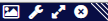

As well as having their own unique properties, the different views also share a number of properties and operations between them.
All the positional and metadata views reflect the current filter state, only showing cross-links / matches that pass the filter settings.
All the positional and meta-data views also support the idea of selecting / highlighting specific cross-links and matches, with selections and highlighting performed in one view reflected in other active views.
The views shown within the panels have a number of functions available through the icons at the top of the panel frame. From left to right these are:

The panels can also be resized by dragging their corners and repositioned by dragging their title bars.